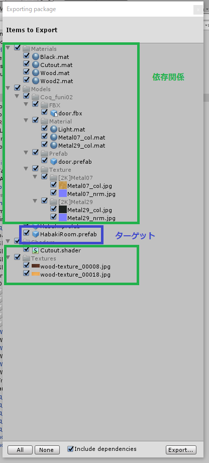
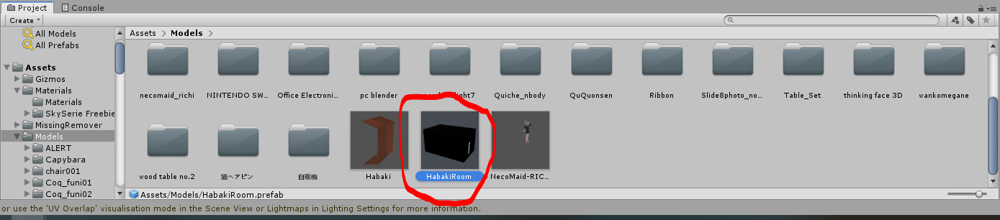
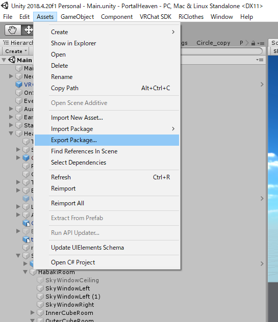

Hi! VRChatにはまった結果ワールド作成沼にもはまり、最近はあんまりVRChatに行っていない、あいやです。
今回はタイトルの通りのunitypackageを作成する方法を、紹介します。
ちなみにこの方法は僕も偶然みつけただけなので、最初びっくりしました！
求める結果
求める結果は下記のような、HabakiRoom.prefabと、その最低限の依存関係のみが入ったunitypackageを作成すること。

具体的には――
HabakiRoom.prefabを提供するために、このunitypackageを作たい。 そのためには、unitypackageにHabakiRoom.prefabの依存関係（HabakiRoomのMaterialやTexture・他のprefabなど）も、unitypackageに含む必要があるよね。
――というシチュエーションを解決するもの。
なぜその「方法」を使うの？
HabakiRoom.prefabの依存していない余計なものを入れると容量が大きくなってしまうし、入れたくないですよね。
なので’Exporting package’で、必要なものを手動チェックしていくと、不要なものが入ってしまったり、必要なものが入っていなかったりしてしまう可能性があります。
しかしそこはさすがUnity！ 依存関係とターゲットを含んだ最小のunitypackageを作成する機能がありました！
方法
本題。 とはいえ、簡単なものです。
- Projectウィンドウで、ターゲットのprefabをクリックする
- 
- そのまま
Export Package...する
- 
これで完了です。
Unityさいこう！
この記事はこちらから修正リクエストを送ることができます。
エクスポートしたいprefabと、その最小限の依存関係のみを持ったunitypackageを作成する - github
ゴミ箱ボタンの左にある、鉛筆ボタンを押してね！